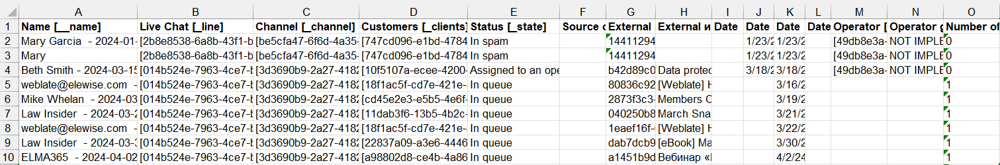

The system administrator can download information about session names, live chats, channels, dates of last activity, clients, etc. as a .xlsx or .csv file. This data can be used to analyze operator performance or transfer information to another system.
Pre-configured session parameters are recorded in the file, as well as custom properties, created by the administrator, such as comments or additional customer contact information.
Messages sent by customers and live chat operators are not exported.
The export is carried out in the Sessions app. Here you can download data from all sessions in the system or select records by searching for specific parameters, for example, export sessions from one live chat assigned to operators of a certain group.
Please note, that you can grant access to live chat operators or supervisors to the Sessions app. They will then see the app in the left menu of the Live Chat workspace, view the records available to their user group as well as search and remove sessions from span. However, exports are always only available to users who are included in the Administrators group.
Import is not available in the Sessions app, i.e. you cannot create new sessions by uploading data to the system.
Export data
To start exporting:
- Go to Live Chats > Sessions.
- If you do not want to download data of all sessions in the system, select the items you want to export by using search by parameters or a filter. For example, you can search for all sessions from a particular live chat for a specified period.
- In the upper right corner, click on the three dots and select Data Export.
- In the opened window, specify:
- Format. Save data to a .xlsx or .csv file;
- Export system information. Export system fields, such as Date of creation, as well as codes and identifiers for properties such as Live Chat, Channel, Operator, etc., along with session parameters;
- Export filtered data. Export data of only those sessions that are selected using search or filter. If this option is unchecked, the parameters of all sessions existing in the system are exported;
- Export the names of app items, users, files. Show data about such objects as app items and system users in the form of names. For example, to include the names of operators, live chats, and communication channels in the file. If you want to export names together with object identifiers, additionally check the Export system information option.
- Click the Export button.
- Click on the name of the generated file to download it to your computer.
The file with session data may look as follows:

Found a typo? Select it and press Ctrl+Enter to send us feedback